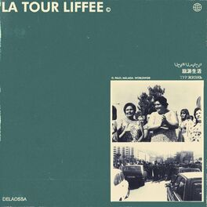

Es un album musical de Delaossa y J.Moods, publicado el 28 de Abril de 2019.
Este album tiene varios género: urbano latino,Hip-hop,Rap y Argentinian trap.
Escuchalo en Youtube

Su fecha de publicación es el 4 de Junio de 2020.
Este album tiene varios género: urbano latino,Hip-hop,Rap y Argentinian trap
Cuenta con 5 canciones en las que se encuentra una de las mas famosas "Veneno".
Escuchalo en Youtube Music
Su fecha de publicación es el 28 de Octubre de 2022 y cuenta con 7 canciones.
Escuchalo en Youtube Music